★⋆. 𝓪𝓫𝓸𝓾𝓽 𝓶𝓮 ★⋆.

Name: Nur Afrina Aleeya binti Nazry
Age: 20
Number of Sibling : 5
Email: afrinanazry98@gmail.com
Birthdate: 9 August 2004
Birthplace: Kuala Lumpur, Malaysia
Favourite food : ayam sambal
Favourite drink : teh o ais limau
Favourite place : home
Favourite singer : seventeen
| Hobby | Details |
|---|---|
| Reading |
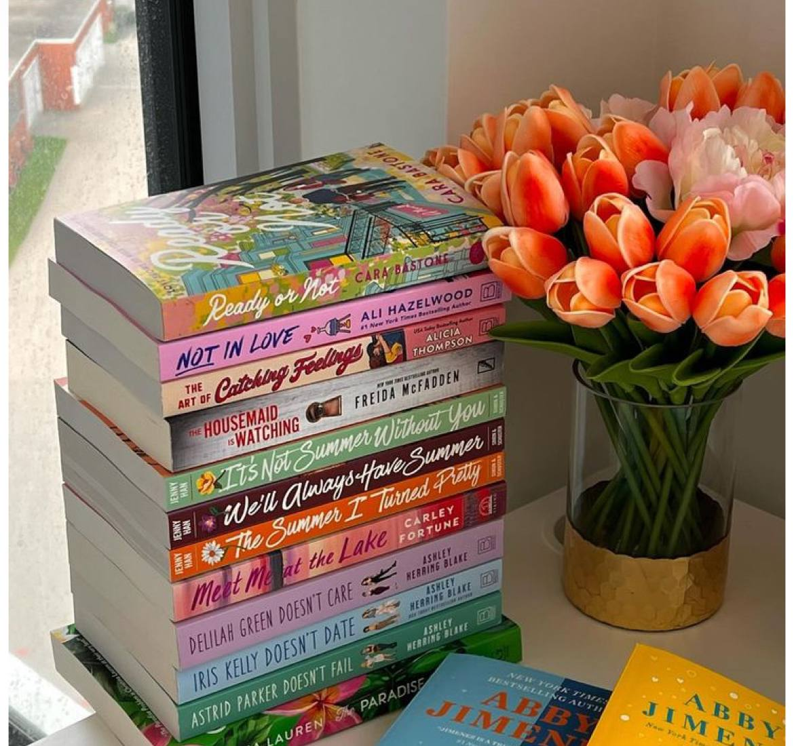
I found my comfort place by reading a book,This hobby started because my dad used to buy plenty of princess books when I was younger and this hobby still growing on me.
|
| Journaling |
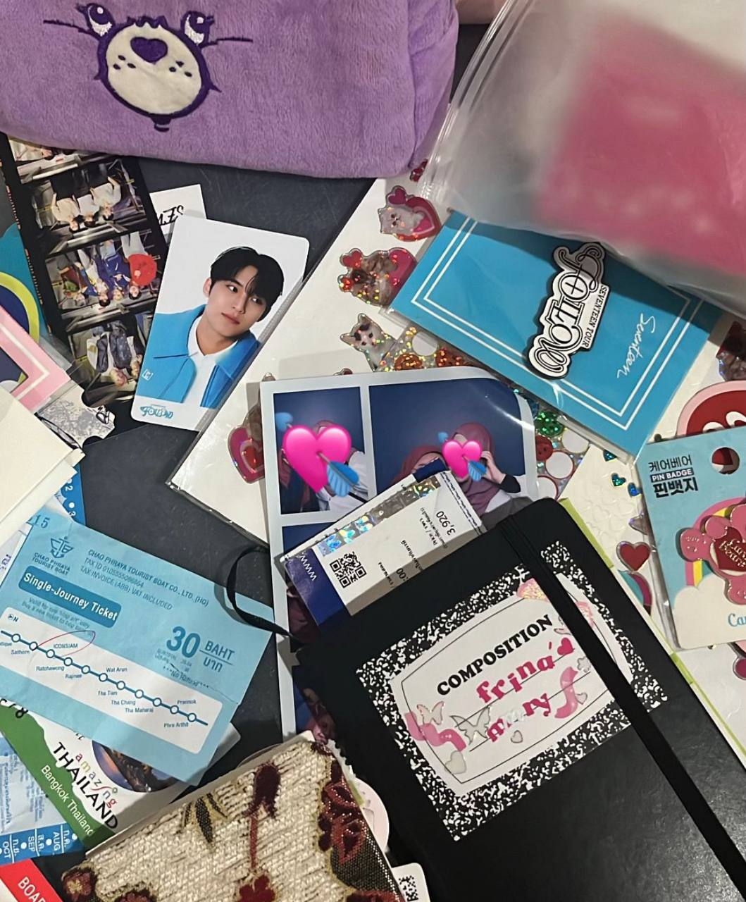
Journaling help me to preserve my memory and moments by putting together the pages and fill it with my own narrative of that day |
| Traveling |
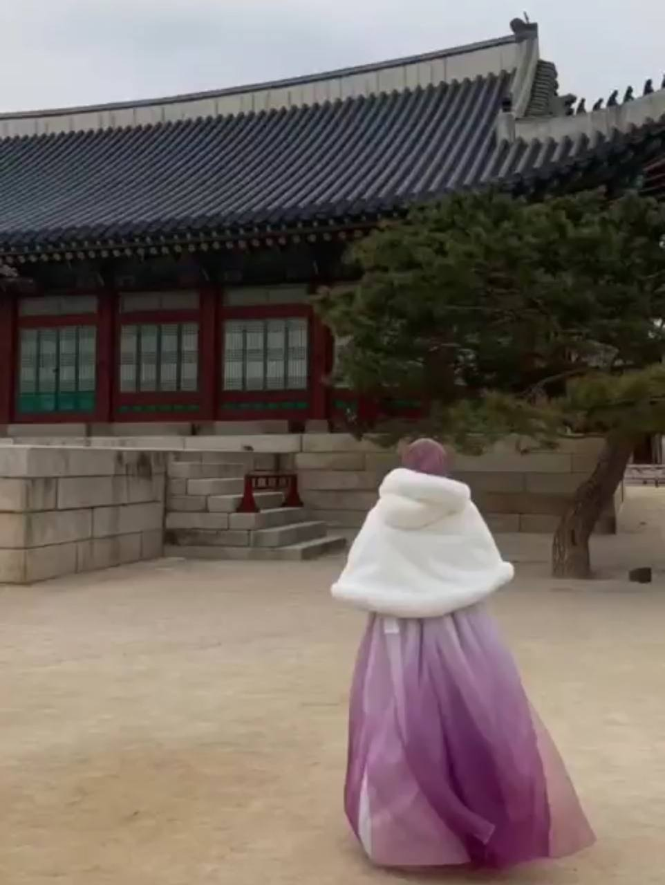
I love exploring new places and experiencing different cultures. Traveling broadens my perspective and provides unforgettable memories. |
| Collecting Picture |
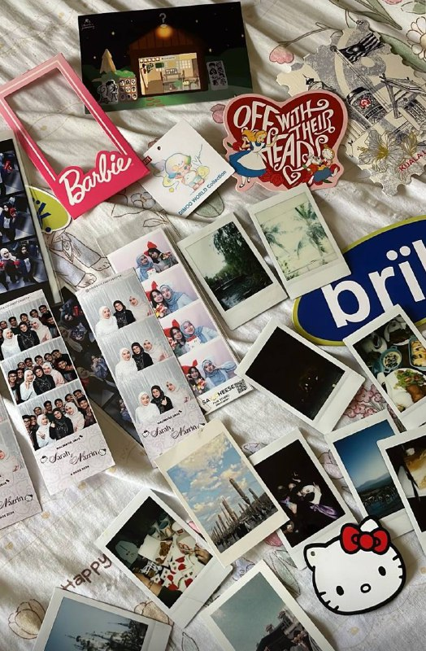
I always carry my polaroid or printing out pictures of the moments that I want to preserve since I feel it much more memorable compared to keeping picture on online / digital storage
|
| Cooking |
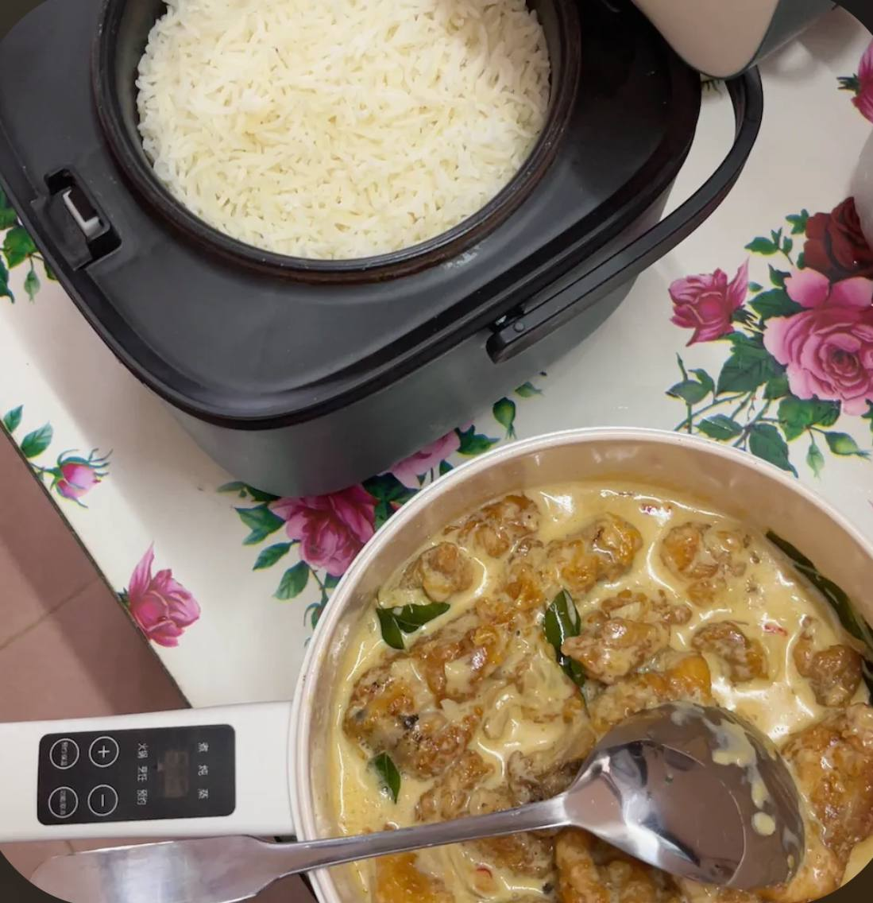
I found my self feeling calm when I cook especially when I cook for others. This hobby started because of my mom always cooking for us everyday back at home. |
| Category | Details |
|---|---|
| Work Experience |
Internship Perpustakaan Tun Abdul Razak, UiTM Shah Alam (July 2024 - September 2024) - Stationed in 10 different departments. - Assisted with tasks and attended workshops provided by PTAR Shah Alam. Food and Beverages Worker Krispy Kreme (June 2022 - August 2022) - Provided excellent customer service, addressing inquiries and processing transactions. - Served nearly 600 customers daily with top-notch service. |
| Education |
University Universiti Teknologi Mara (UiTM), Johor Campus, Segamat Diploma in Information Management (2022 - Now) High School SMK Seksyen 9, Shah Alam Computer Science Stream (2017 - 2022) |
| Skills |
Languages - Bahasa Malaysia (Native) - English (High Proficiency, MUET Band: 4.5) - Bahasa Indonesia (Comfortable) - Korean (Beginner Level) Coding Languages - C++ (Intermediate) - JavaScript (Entry Level) - Python (Entry Level) Software - Microsoft Word, PowerPoint (High Proficiency) - Microsoft Excel (Intermediate) - Canva, Capcut (High Proficiency) Soft Skills - Good Communication Skills - Teamwork - Adaptability to New Environments |
Here are some images from my personal collection

𝓶𝔂 𝓯𝓪𝓶𝓲𝓵𝔂 𝓻𝓪𝔂𝓪 𝓹𝓲𝓬𝓽𝓾𝓻𝓮
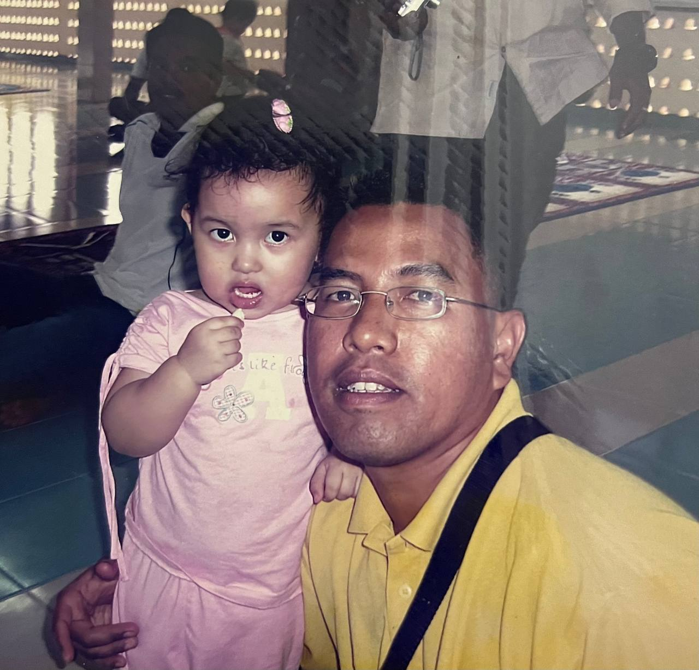𝓶𝔂 𝓫𝓪𝓫𝔂 𝓹𝓱𝓸𝓽𝓸 𝔀𝓲𝓽𝓱 𝓶𝔂 𝓭𝓪𝓭
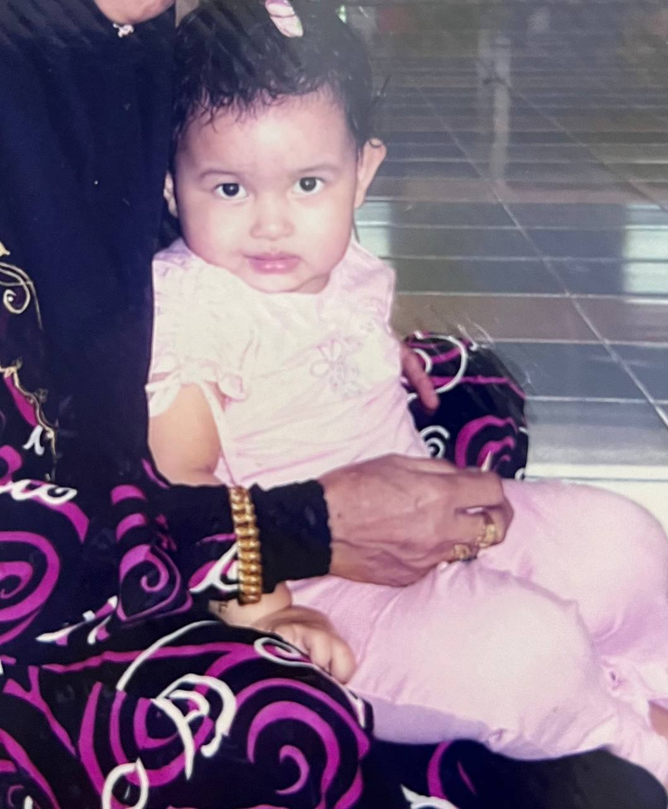𝓫𝓪𝓫𝔂 𝓶𝓮
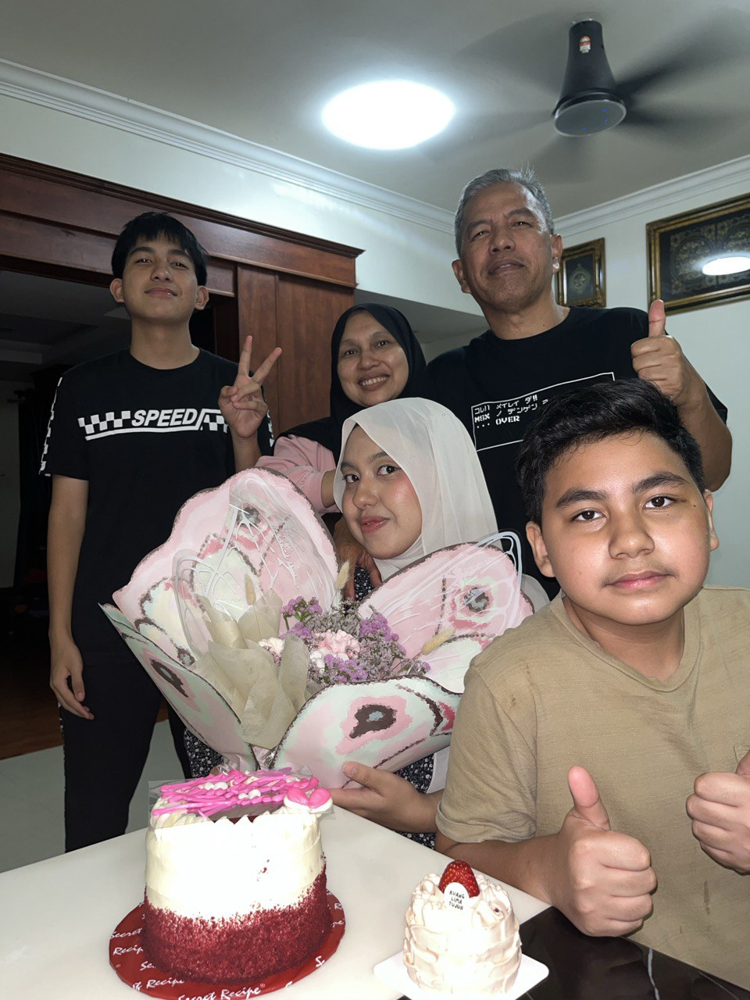𝓫𝓲𝓻𝓽𝓱𝓭𝓪𝔂 𝓹𝓲𝓬𝓽𝓾𝓻𝓮 𝔀𝓲𝓽𝓱 𝓶𝔂 𝓯𝓪𝓶𝓲𝓵𝔂
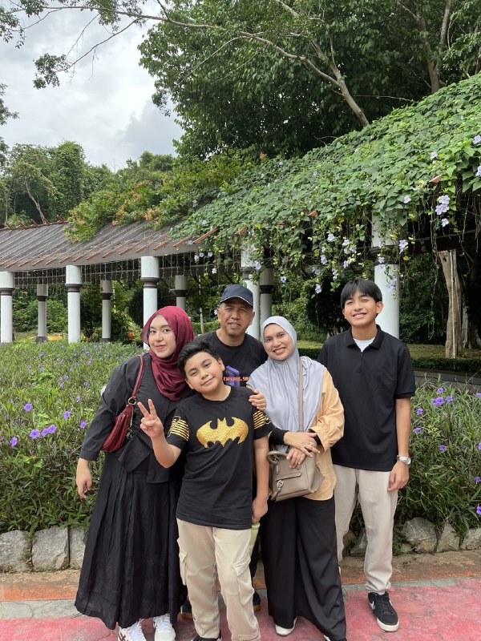𝓰𝓪𝓻𝓭𝓮𝓷 𝓹𝓲𝓬𝓽𝓾𝓻𝓮 𝔀𝓲𝓽𝓱 𝓶𝔂 𝓵𝓸𝓿𝓮𝓼 𝓸𝓷𝓮
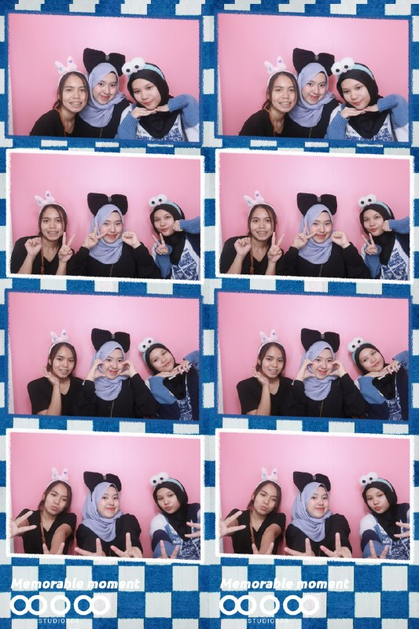𝓹𝓲𝓬𝓽𝓾𝓻𝓮 𝔀𝓲𝓽𝓱 𝓶𝔂 𝓱𝓲𝓰𝓱 𝓼𝓬𝓱𝓸𝓸𝓵 𝓰𝓻𝓸𝓾𝓹
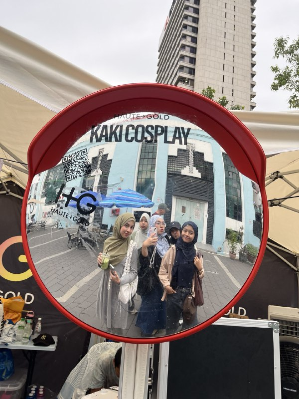𝓹𝓲𝓬𝓽𝓾𝓻𝓮 𝔀𝓲𝓽𝓱 𝓶𝔂 𝓾𝓷𝓲 𝓫𝓮𝓼𝓽𝓲𝓮𝓼
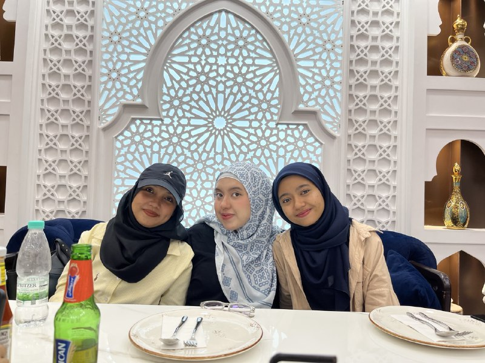𝓹𝓲𝓬𝓽𝓾𝓻𝓮 𝔀𝓲𝓽𝓱 𝓷𝓪𝓳𝔀𝓪 𝓪𝓷𝓭 𝓻𝓲𝓯𝓱𝓪𝓷𝓲𝓼
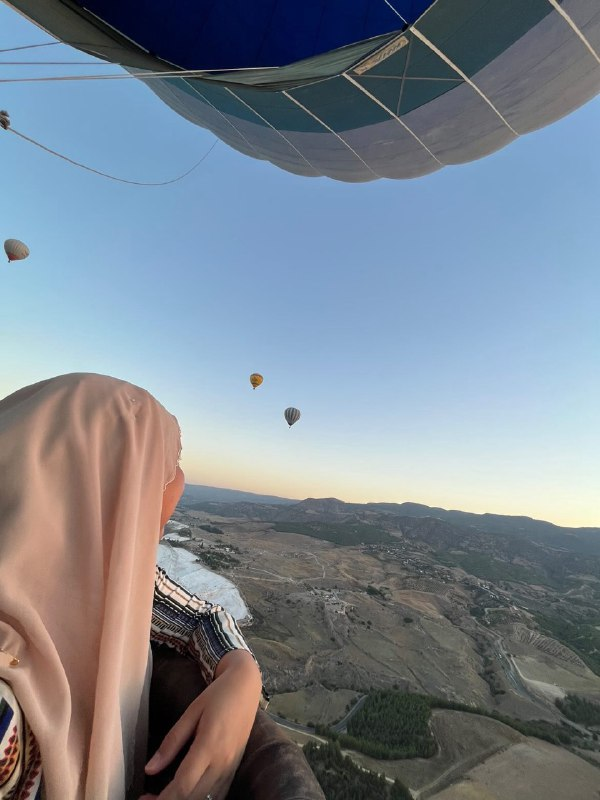𝓹𝓲𝓬𝓽𝓾𝓻𝓮 𝓲𝓷 𝓽𝓾𝓻𝓴𝓲𝔂𝓮
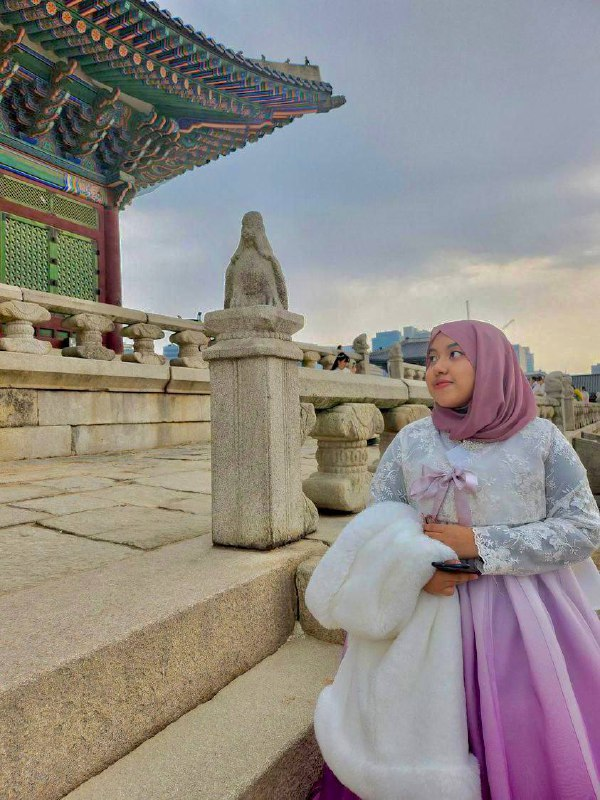𝓹𝓲𝓬𝓽𝓾𝓻𝓮 𝓲𝓷 𝓴𝓸𝓻𝓮𝓪
˖⁺‧₊˚ ˚₊‧⁺˖✮ 𝒔𝒐𝒄𝒊𝒂𝒍 𝒎𝒆𝒅𝒊𝒂 ✮˖⁺‧₊˚ ˚₊‧⁺˖
Stay connected and follow me on social media: